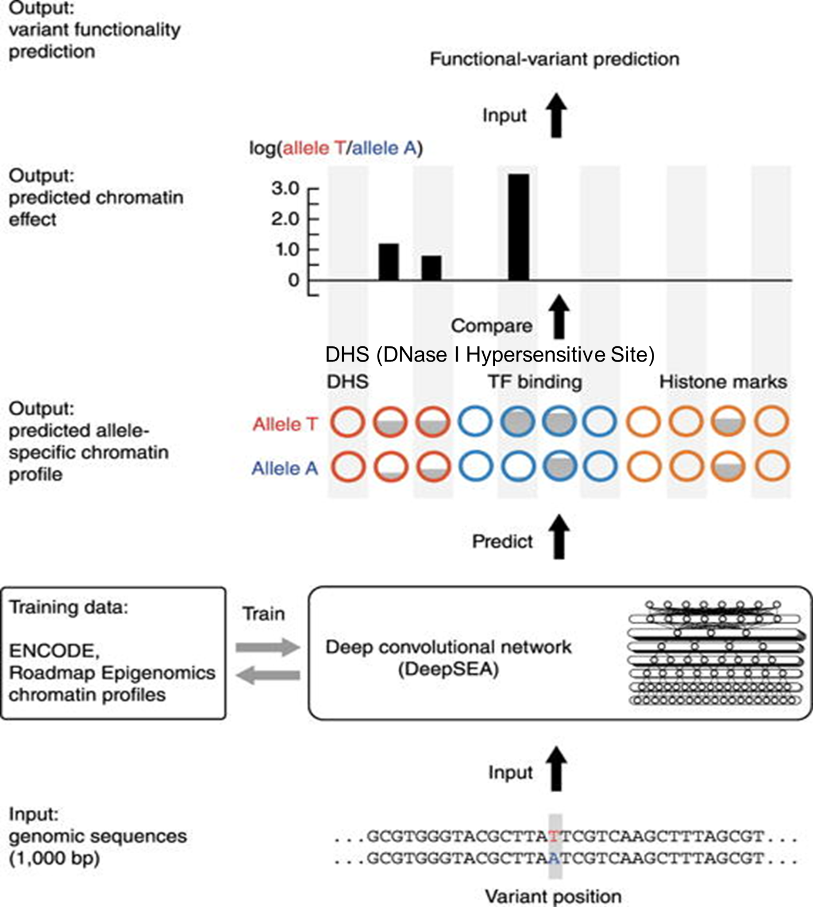
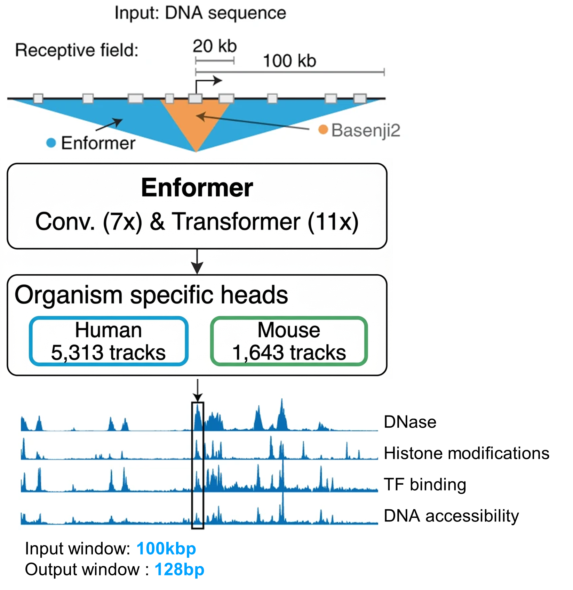

2. Sequence-to-function AI: context–resolution trade-off¶
Sequence-to-function AI란?¶
non-coding variant 해석이 어려운 이유는, 변이의 효과가 DNA 서열 하나만으로 결정되지 않고 TF binding, chromatin state, enhancer activity 같은 여러 조절 층위를 통해 간접적으로 나타나기 때문입니다. 이러한 문제를 서열 기반으로 직접 다루기 위해 등장한 것이 sequence-to-function AI 모델입니다.
이 모델들은 DNA 서열을 입력으로 받아 chromatin accessibility, TF binding, histone mark 같은 기능적 출력을 예측하고, reference allele과 alternative allele 사이의 예측 차이를 비교해 variant effect를 추정합니다.
Sequence-to-function AI의 장단점: 짧은 입력은 정밀하지만, 긴 문맥을 보기 어렵다¶
이런 sequence-to-function 접근의 초기 대표 모델 중 하나가 DeepSEA입니다. DeepSEA는 DNA 서열만을 입력으로 받아, 그 주변에서 일어날 수 있는 다양한 chromatin-related 기능적 출력을 예측하고, 더 나아가 특정 변이가 이런 출력에 어떤 영향을 줄지를 비교하는 방식으로 variant effect prediction까지 수행한 초기 모델입니다. 즉, “서열로부터 기능을 예측한다”는 아이디어를 본격적으로 보여준 출발점 중 하나라고 볼 수 있습니다.

그림을 보면, 먼저 약 1,000 bp 길이의 DNA 서열이 입력으로 들어갑니다. 이 서열은 가운데의 convolutional neural network를 통과하면서 motif 수준의 패턴을 학습하게 되고, 최종적으로는 DHS, TF binding, histone marks 와 같은 여러 chromatin-related output을 예측합니다. 즉, 모델은 단순히 “이 서열이 promoter 같다” 혹은 “enhancer 같다”라고만 분류하는 것이 아니라, 여러 functional genomic signal을 동시에 예측하는 방식으로 서열의 조절 기능을 읽어내려고 합니다.
또 이 그림의 중요한 부분은, 같은 위치에 대해 reference allele 과 alternative allele 을 각각 넣어 본 뒤 그 예측값의 차이를 비교한다는 점입니다. 예를 들어 특정 변이 때문에 TF binding signal이 줄어들거나, DNase hypersensitivity가 감소하거나, 반대로 histone mark signal이 증가한다면, 이 차이를 바탕으로 해당 변이가 기능적으로 의미 있는지 추정할 수 있습니다. 즉, DeepSEA는 sequence-to-function prediction과 variant effect prediction을 연결한 초기 틀을 제시했다고 볼 수 있습니다.
이런 구조의 장점은 분명합니다. 입력 길이가 짧기 때문에, 모델은 변이 주변의 국소적인 motif 변화 나 가까운 범위에서 일어나는 sequence pattern을 비교적 정밀하게 포착할 수 있습니다. 특히 어떤 염기가 canonical motif의 핵심 위치를 깨뜨리는지, 혹은 국소적인 TF-binding pattern을 강화하거나 약화시키는지를 보는 데에는 이런 short-context 모델이 유리합니다.
하지만 동시에 한계도 있습니다. 약 1,000 bp 정도의 입력 길이는 single-base 수준의 정밀한 예측에는 적합하지만, 그보다 훨씬 멀리 떨어진 enhancer–promoter interaction, 세포 특이적인 장거리 조절, 혹은 3차원 genome folding이 반영된 long-range regulatory context를 충분히 담기에는 짧습니다. 즉, 가까운 서열 문맥은 잘 보지만, 유전자 발현을 좌우하는 더 넓은 조절 환경까지 한 번에 이해하기에는 receptive field가 제한적이었던 것입니다.
정리하면, DeepSEA는 sequence-to-function AI의 중요한 출발점으로서 짧은 입력에서 높은 정밀도 라는 강점을 보여주었지만, 그 대가로 장거리 genomic context를 충분히 반영하기 어렵다 는 한계도 함께 드러냈습니다. 이 점이 이후 Enformer나 AlphaGenome 같은 모델들이 더 긴 입력 문맥을 다루려는 방향으로 발전하게 된 배경이라고 볼 수 있습니다.
반면 1 bp resolution이 높다는 것은, 모델이 출력 신호를 넓은 bin 평균값이 아니라 개별 염기 수준에서 다룰 수 있다는 뜻입니다. 따라서 특정 위치의 염기 하나가 바뀌었을 때 donor/acceptor motif, TF-binding motif, 혹은 국소적인 chromatin signal이 얼마나 달라지는지를 더 정밀하게 포착할 수 있습니다.
Next Seq-to-function AI: 긴 입력은 장거리 정보를 보지만, 해상도는 낮아질 수 있다¶
DeepSEA 같은 초기 모델이 주로 변이 주변의 짧은 local sequence context를 정밀하게 보는 데 강점이 있었다면, 그 다음 세대의 sequence-to-function 모델들은 더 멀리 떨어진 regulatory context까지 함께 보려는 방향으로 발전했습니다. 그 대표적인 예가 Enformer와 같은 long-context 모델입니다.
1000 bp가 짧다는 것은, 변이 주변의 가까운 서열은 자세히 볼 수 있지만, 멀리 떨어진 enhancer나 장거리 조절 요소까지는 한 화면에 담기 어렵다는 뜻입니다.
반대로 입력을 100 kb처럼 길게 늘리면 더 넓은 genomic context를 볼 수 있지만, 그 모든 위치를 1 bp 단위로 그대로 계산하고 출력하기에는 계산량이 너무 커집니다. 그래서 모델은 내부적으로 정보를 압축하고, 최종 출력도 128 bp 같은 bin 단위 평균값으로 내보내는 경우가 많습니다.
따라서 1 bp resolution은 “염기 하나의 변화까지 세밀하게 본다”는 뜻이고, 128 bp bin output은 “그 구간 전체의 평균적인 signal을 본다”는 뜻입니다. 즉, 더 멀리 보는 대신 더 미세한 변화는 덜 선명하게 보일 수 있습니다.

이 그림의 핵심은 위쪽의 receptive field와 아래쪽의 output resolution입니다. 즉, 모델이 입력으로 얼마나 넓은 범위의 DNA를 볼 수 있는지, 그리고 그 결과를 얼마나 세밀한 단위로 내보내는지를 동시에 보여주고 있습니다.
이런 long-context 모델이 필요한 이유는, 실제 유전자 조절이 변이 바로 주변 1000 bp 안에서만 일어나지 않기 때문입니다. 예를 들어 특정 enhancer는 target promoter로부터 수십 kb 이상 떨어져 있을 수 있고, 세포 유형에 따라 어떤 distal regulatory element가 실제로 작동하는지도 달라질 수 있습니다. 따라서 gene expression이나 chromatin state를 제대로 예측하려면, 변이 바로 근처 motif만 보는 것이 아니라 더 넓은 genomic neighborhood를 함께 고려해야 합니다.
Enformer는 이런 문제를 해결하기 위해 convolution과 transformer를 결합해 더 넓은 입력 구간에서 장거리 상호작용을 학습하려고 합니다. 즉, 모델은 주변의 promoter, enhancer, 그리고 더 멀리 있는 regulatory signal까지 함께 보면서 특정 위치의 functional output을 예측합니다. 이 점에서 short-context 모델보다 훨씬 더 많은 문맥 정보를 반영할 수 있다는 장점이 있습니다.
하지만 그 대가도 있습니다. 이런 모델들은 긴 입력을 처리하는 과정에서 중간 representation을 점점 압축하고 요약하게 되며, 최종 출력도 종종 1 bp가 아니라 128 bp 같은 bin 단위로 주어집니다. 즉, 모델이 예측하는 값은 “이 정확한 한 염기에서 무슨 일이 일어나는가”라기보다, 이 128 bp 구간 전반에서 평균적으로 어떤 signal이 나타나는가에 더 가깝습니다.
이 차이는 variant effect interpretation에서 꽤 중요합니다. 예를 들어 TF motif의 핵심 염기 하나가 바뀌거나, splice donor/acceptor site의 정확한 위치가 깨지는 경우에는 변화가 매우 국소적이고 single-base 수준에서 일어납니다. 그런데 출력이 넓은 bin으로 평균화되면, 이런 미세한 변화는 주변 신호에 섞여 상대적으로 덜 선명하게 보일 수 있습니다. 즉, long-range regulation을 반영하는 능력은 커지지만, 특정 염기 하나의 정밀한 효과를 읽어내는 능력은 상대적으로 희생될 수 있습니다.
정리하면, Enformer류 모델은 더 긴 DNA 문맥을 볼 수 있기 때문에 distal enhancer–promoter interaction이나 장거리 regulatory context를 더 잘 반영할 수 있지만, 그 대신 출력이 더 거친 bin 단위로 주어져 single-base 수준의 정밀도는 낮아질 수 있습니다. 이것이 sequence-to-function AI에서 중요한 context–resolution trade-off입니다.
짧은 모델은 정밀도에, 긴 모델은 문맥에 강합니다.
AlphaGenome은 바로 이 trade-off를 어떻게 줄일 수 있을지에서 출발하는 모델이라고 볼 수 있습니다.